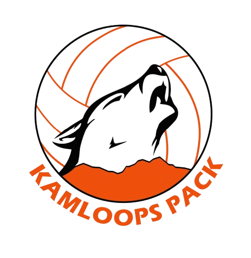

01

Computer Science · TRU ’29 · Canada
I’m Ibrahim, a Computer Science student turning real requirements into reliable systems and thoughtful web experiences. My work brings together technical discipline, visual craft, and a poet’s attention to detail.
const ibrahim = {
focus: [
"web experiences",
"software systems",
"human-centred design"
],
tools: ["JavaScript", "Python", "Java", "C++"],
creativePractice: ["piano", "poetry"],
principle: "make it useful, then memorable"
};Requirements thinking
◆Responsive interfaces
◆Clear documentation
◆Community perspective
Selected work
Each project begins with a real audience or system need. These are the decisions, constraints, and outcomes behind the interface.

Systems analysis · Requirements
A requirements-driven system design covering inventory, sales, customers, credit, and payments—with documentation that makes the business logic traceable.
Personal brand · Web development
A fast, accessible, dependency-light portfolio built to tell a coherent story across work, education, community service, and creative practice.
 Student
StudentBeyond the screen
I grew up in Pakistan and now study Computer Science in Canada. Moving between cultures taught me to listen closely, adapt quickly, and design for people whose experiences differ from my own.
Practice taught me patience, timing, and how small details shape a complete experience.
Writing helps me communicate complex ideas with economy, voice, and intention.
Community work keeps impact grounded in real people, not abstract users.
Now
Moving from polished interfaces toward complete, maintainable applications.
Building the fundamentals before making claims—and documenting the process as I go.
Start a conversation
I’m open to internships, collaborations, and conversations about useful software.